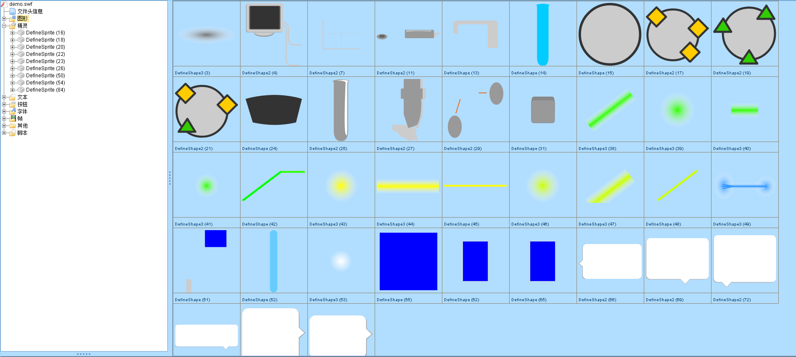

背景
这个动画的背景是在做一个专业课介绍网站时，有一个动画因flash已不再支持而无法显示。恰好又因为在逛某404网站时，看到了The Coding Train的Code! Programming with p5.js系列，（加之刚好考完研了，有点闲了）于是就想到了用p5js来重现这个flash动画的效果。

flash文件，可点击此处下载
最终成品效果
若显示有问题，可点击此处打开新的选项卡查看
实现过程
动画拆解
通过观察，可以看到本动画主要包含以下几个部分：
- 一个固定的背景
- 蓝色激光源在动画刚开始时需要有渐入效果
- 试管中四种粒子的不规则向上运动
- 流动腔四种粒子的依次向下流出，且在动画刚开始时有蓝色背景逐渐向下移动效果
- 蓝色激光源在检测到粒子时，需要显示对应的蓝色和绿色激光，并在电脑上显示检测到的粒子
素材提取
由于原始动画是使用flash制作的，故首先使用jpexs-decompiler提取了所需要的图形文件，并将其保存成svg矢量图格式方便后续进行缩放。

背景制作
静态的背景较为简单，直接使用ps、ai、在线svg编辑器啥的合成一张大背景，随后直接显示即可

1 | function setup(){ |
蓝色激光源的渐入效果
此动画的实现也较为简单，使用tint()函数可修改显示图片的不透明度，维护alpha变量，使其在每次更新时增加easing值即可实现图片的渐入。
1 | function Laser() { |
试管中的动画
(挖个坑，有空再填)